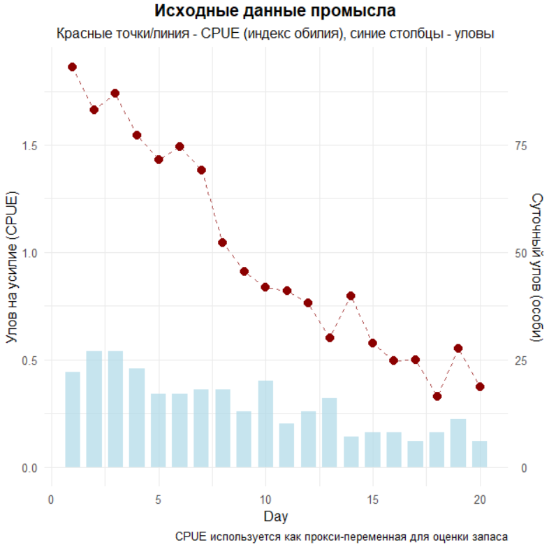
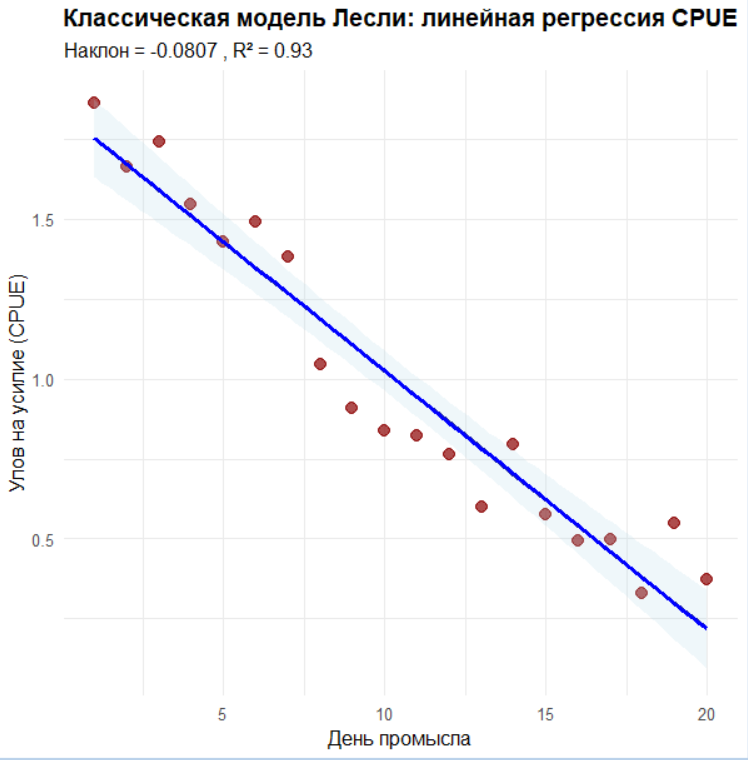
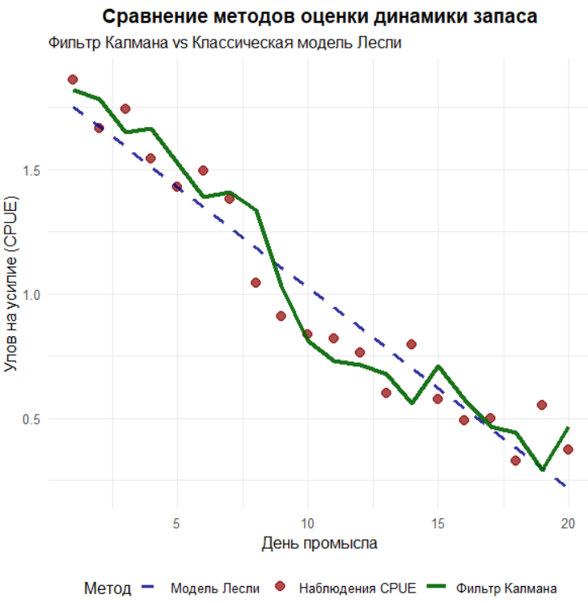
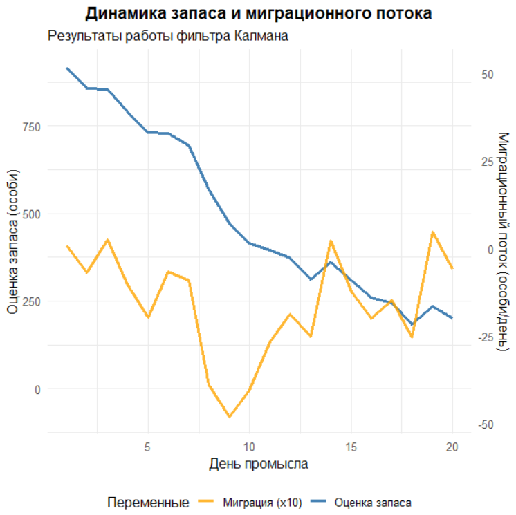
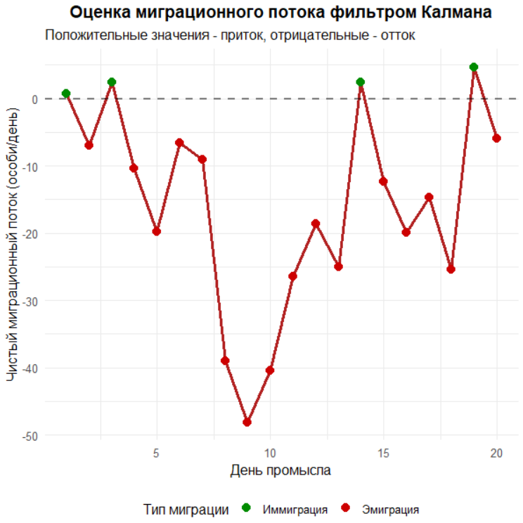

# ПРАКТИКУМ: ФИЛЬТР КАЛМАНА ДЛЯ ОЦЕНКИ ЗАПАСА ГИДРОБИОНТОВ
# =====================================================================================================================
# Автор: Баканев С.В. Для курса "Оценка водных биоресурсов при недостатке данных в среде R (для начинающих)"
# Цель: Показать преимущества фильтра Калмана перед классическими методами
# =====================================================================================================================
library(ggplot2)
library(dplyr)
library(tidyr)
# ЧАСТЬ 1: ГЕНЕРАЦИЯ И ВИЗУАЛИЗАЦИЯ СИНТЕТИЧЕСКИХ ДАННЫХ
# ======================================================
# В реальных условиях мы не знаем истинного состояния запаса,
# но для демонстрации методов создадим синтетические данные
cat("=== ЧАСТЬ 1: ГЕНЕРАЦИЯ И ВИЗУАЛИЗАЦИЯ ДАННЫХ ===\n\n")
# Устанавливаем seed для воспроизводимости результатов
set.seed(123)
days <- 1:20 # 20 дней наблюдений
# СОЗДАЕМ РЕАЛИСТИЧНУЮ ДИНАМИКУ ЗАПАСА:
# 1. Экспоненциальное снижение (естественная смертность + вылов)
# 2. Миграционные всплески (приток/отток особей)
# 3. Случайные колебания (неучтенные факторы)
cat("Создание модели истинного запаса...\n")
migration_pattern <- c(rep(0,5), 50, 80, 30, rep(0,5), -40, -60, -20, rep(0,3))
true_stock <- 1000 * exp(-0.08 * days) + migration_pattern + rnorm(20, sd = 25)
cat("Генерация данных промысла...\n")
# Создаем dataframe с данными наблюдений
data <- data.frame(
Day = days,
# Суточный вылов (2-5% от текущего запаса)
Catch = pmax(round(true_stock * runif(20, 0.02, 0.05)), 0),
# CPUE (Catch Per Unit Effort) - основной наблюдаемый показатель
# В реальности зависит от множества факторов, здесь - линейная зависимость + шум
CPUE = true_stock * 0.002 + rnorm(20, sd = 0.1)
)
# БАЗОВАЯ СТАТИСТИКА ДАННЫХ
cat("Средний улов на усилие (CPUE):", round(mean(data$CPUE), 3), "\n")
cat("Общий вылов за период:", sum(data$Catch), "условных единиц\n")
cat("Максимальный суточный вылов:", max(data$Catch), "\n")
cat("Минимальный суточный вылов:", min(data$Catch), "\n\n")
# ВИЗУАЛИЗАЦИЯ ИСХОДНЫХ ДАННЫХ
cat("Построение графика исходных данных...\n")
plot_raw_data <- ggplot(data, aes(x = Day)) +
# Столбцы - суточный вылов (масштабируем для совмещения с CPUE)
geom_col(aes(y = Catch/50), fill = "lightblue", alpha = 0.7, width = 0.7) +
# Точки и линия - наблюдения CPUE
geom_point(aes(y = CPUE), color = "darkred", size = 3) +
geom_line(aes(y = CPUE), color = "darkred", linetype = "dashed", alpha = 0.7) +
# Две оси Y для разных масштабов
scale_y_continuous(
name = "Улов на усилие (CPUE)",
sec.axis = sec_axis(~ . * 50, name = "Суточный улов (особи)")
) +
labs(title = "Исходные данные промысла",
subtitle = "Красные точки/линия - CPUE (индекс обилия), синие столбцы - уловы",
caption = "CPUE используется как прокси-переменная для оценки запаса") +
theme_minimal(base_size = 12) +
theme(plot.title = element_text(face = "bold", hjust = 0.5),
plot.subtitle = element_text(hjust = 0.5))
print(plot_raw_data)30 Фильтр Калмана
30.1 Введение
Это занятие — про то, как перестать путать «то, что мы меряем», с «тем, что в системе происходит на самом деле». В промысловой статистике CPUE — это не запас, а мутный его отпечаток: одновременно в нём “сидят” и изъятие, и миграции, и случайные колебания наблюдений. Фильтр Калмана — это рекурсивный метод оценивания скрытых состояний динамической системы, в которой сама динамика и измерения зашумлены. Он раздельно учитывает две неопределённости — в процессах и в наблюдениях, на каждом шаге строит прогноз состояния, сравнивает его с новым фактом и корректирует оценку, оптимально взвешивая доверие к модели и данным. В гидробиологии и рыбохозяйственной науке эта логика особенно полезна там, где прямых наблюдений запаса нет, а есть индексы и оперативная промысловая информация: по временным рядам CPUE и выловов можно последовательно восстанавливать траектории численности/биомассы, пополнения, миграции и улавливаемости; объединять несколько источников данных с разной точностью; устойчиво проходить через пропуски и нерегулярные наблюдения; получать не только оценки, но и их дисперсии и доверительные интервалы. Именно поэтому фильтр Калмана может стать рабочей лошадкой для задач локальных открытых запасов, анализа истощения, последовательных моделей по возрасту/длине, а также структурных временных рядов, где есть медленно меняющиеся «скрытые» факторы продуктивности.
Ключевое препятствие классическим регрессионным моделям истощения в реальных промысловых ситуациях — открытость локальных запасов и шумность индексов. Когда через границы полигона идут разнонаправленные миграции, а наблюдения CPUE подвержены дополнительной вариабельности, наклон «линии Лесли» становится неустойчивым и плохо интерпретируемым, а в формулировке Де Лури добавляется ещё и методическая смещённость из‑за лог-линеаризации. В такой постановке нельзя честно отделить влияние вылова от неучтённых факторов и ошибок измерений.
Эту методическую развилку аккуратно разобрал Александр Аркадьевич Михеев в работе «Приложение модели открытой эксплуатируемой популяции к оценке локальных запасов» (Труды ВНИРО, 2014, т. 151: 95–108). Он показал, что регрессионные методы не позволяют корректно оценивать открытый локальный запас, и предложил обобщённую модель Лесли с фильтром Калмана (ОМЛ ФК) как диагностическую модель для периода промысла.
Суть обобщения проста и физически прозрачна. Запас \(N_t\) эволюционирует согласно балансовому уравнению:
\[ N_t = N_{t-1} - C_t + m_{t-1} + \varepsilon_t, \]
где: - \(C_t\) — известный вылов в момент времени \(t\), - \(m_t\) — скрытый результирующий приток/отток (включающий миграции, неучтённый вылов и прочие неизмеряемые эффекты), - \(\varepsilon_t\) — случайная ошибка процесса.
Динамика скрытого компонента \(m_t\) задаётся как процесс с затухающей памятью:
\[ m_t = a\, m_{t-1} + \delta_t, \qquad |a| < 1, \]
где \(a\) — коэффициент автокорреляции, а \(\delta_t\) — белый шум.
Наблюдения представляют собой зашумлённый индекс биомассы:
\[ y_t = q\, N_t + w_t, \]
где \(q\) — коэффициент улавливаемости (catchability), а \(w_t\) — шум измерения.
В формализме пространства состояний такая модель естественным образом обрабатывается фильтром Калмана: на каждом шаге последовательно вычисляются: - инновации (ошибки прогноза), - их дисперсии, - коэффициент усиления (Kalman gain).
Параметры системы (\(a\), \(q\)) и характеристики шумов (\(\mathrm{Var}(\varepsilon_t)\), \(\mathrm{Var}(\delta_t)\), \(\mathrm{Var}(w_t)\)) оцениваются методом максимального правдоподобия, используя разложение логарифмической функции правдоподобия по ошибкам предсказания.
Отдельно отметим вклад Александра Аркадьевича: он показал, что попытка оценить вклад вылова и неучтённых факторов с помощью множественной регрессии на накопленные величины \(K_t = \sum_{s=1}^t C_s\) и \(M_t = \sum_{s=1}^t m_s\) обречена на неудачу из‑за сильной мультиколлинеарности между регрессорами. Введение скрытого состояния \(m_t\) позволяет корректно разделить влияние управляемого вылова \(C_t\) и неуправляемых экзогенных факторов, обеспечивая как идентифицируемость, так и интерпретируемость модели.
Практически важная часть его работы — обработка нерегулярных промысловых рядов: регуляризация времени через весовые матрицы для ежедневной шкалы, что позволяет фильтру корректно работать с «рваными» данными ловушечных промыслов. В приложении автор выводит уравнения фильтра для конкретной модели, даёт интерпретацию оценок в шкале наблюдений через статистические веса, связывает их с усилением Калмана и доказывает теорему об эффективности оценок для ОМЛ ФК. На эмпирических примерах из Сахалино‑Курильского региона он демонстрирует, что ОМЛ ФК возвращает более узкие и менее смещённые оценки по сравнению с классической Лесли, устойчиво работает при иммиграции/эмиграции и позволяет явно оценивать величину «скрытого» потока и погрешность наблюдений; именно эта модель легла в основу метода полигонов при подготовке оперативных прогнозов для беспозвоночных. В рамках нашей практики мы будем исходить из этой логики: трактовать CPUE как шумный отпечаток скрытого состояния, отделять процесс от измерения, последовательно обновлять знание о запасе и миграции и опираться на проверяемые статистические предпосылки.
30.2 Что делаем?
Скрипт целиком.
Мы идём от генерации учебных данных к классической регрессии Лесли и далее к фильтру Калмана в постановке обобщённой модели Лесли, последовательно рассчитываем оценки состояний и сравниваем подходы на одних и тех же рядах. Сначала подготавливаем окружение и подключаем пакеты для визуализации и манипуляций с данными. Далее создаём синтетический «мир», в котором известна истинная траектория запаса, чтобы наглядно видеть, что из неё восстанавливают разные методы. Для этого фиксируем генератор случайных чисел set.seed(123) ради воспроизводимости и задаём временную шкалу из 20 последовательных дней. Истинный запас формируем как комбинацию экспоненциального спада от стартового уровня 1000 с коэффициентом 0.08 в день, добавляем шаблон миграционных всплесков и оттоков и добавляем белый шум rnorm с дисперсией 25^2, символизирующий непросчитанные факторы процесса. Миграционный шаблон задан вектором, в котором сначала идёт спокойный период, затем три положительных всплеска, снова спокойный отрезок и три отрицательных импульса, затем ещё несколько нулей. Обратите внимание: в примере длина migration_pattern равна 19 при 20 днях, поэтому R предупреждает о неполном кратном «переразмножении» вектора и рециклирует его, что порождает предупреждение; чтобы его избежать, длину шаблона следует сделать ровно 20, добавив один ноль в конец. На основе истинного запаса формируем наблюдаемые промысловые ряды. Суточный вылов задаём как 2–5% от текущего запаса: для каждого дня генерируется коэффициент из равномерного распределения runif(0.02, 0.05), перемножается на true_stock, результат округляется и обрезается снизу pmax(…, 0), чтобы исключить отрицательные величины. CPUE, наш «индекс обилия», создаём как линейную функция от запаса с коэффициентом улавливаемости 0.002 и добавочным шумом измерений rnorm(sd = 0.1); это важно, потому что дальше в фильтре Калмана мы будем использовать тот же q, и таким образом обеспечиваем согласование шкал. Сразу выводим простейшие описательные характеристики: средний CPUE, суммарный вылов и диапазон суточного вылова, чтобы понимать порядок величин. Визуализируем исходные данные на одном графике с двумя шкалами: столбцами показываем суточный вылов, масштабированный делением на 50 для совместимости по оси Y с CPUE, точки и пунктирная линия — это наблюдения CPUE. Вторичная ось возвращает масштаб выловов умножением на 50, подписи и аккуратная тема помогают мгновенно считывать структуру рядов.

Далее демонстрируем классический «линейный» взгляд на истощение через модель Лесли в её регрессионной версии на время: строим прямую CPUE ~ Day с помощью lm, сохраняем предсказания в таблицу и печатаем ключевые статистики — наклон, R^2 и p-значение. Такая формулировка намеренно упрощённая по сравнению с канонической регрессией на накопленный вылов, но она хорошо иллюстрирует идею «одной линии по шумным точкам», о которой говорилось во введении. Строим отдельный график, где на исходные точки CPUE накладываем линию предсказаний регрессии и её стандартную полосу через geom_smooth(method = “lm”), чтобы визуально увидеть, как прямая «усредняет» колебания.
# ЧАСТЬ 2: КЛАССИЧЕСКАЯ МОДЕЛЬ ЛЕСЛИ
# ===================================
# Модель Лесли - традиционный подход для оценки динамики популяций
# Предполагает линейное изменение CPUE во времени
cat("\n=== ЧАСТЬ 2: КЛАССИЧЕСКАЯ МОДЕЛЬ ЛЕСЛИ ===\n\n")
# Линейная регрессия CPUE от времени
cat("Построение линейной регрессии CPUE ~ Day...\n")
lm_model <- lm(CPUE ~ Day, data = data)
# Добавляем предсказания модели в dataframe
data$LM_Prediction <- predict(lm_model)
# ВЫВОД РЕЗУЛЬТАТОВ РЕГРЕССИИ
cat("РЕЗУЛЬТАТЫ ЛИНЕЙНОЙ РЕГРЕССИИ:\n")
cat("Наклон (темп снижения CPUE):", round(coef(lm_model)[2], 5), "\n")
cat("R² (доля объясненной дисперсии):", round(summary(lm_model)$r.squared, 3), "\n")
cat("p-значение:", round(summary(lm_model)$coefficients[2,4], 5), "\n\n")
# ВИЗУАЛИЗАЦИЯ МОДЕЛИ ЛЕСЛИ
cat("Визуализация результатов линейной модели...\n")
plot_leslie <- ggplot(data, aes(x = Day, y = CPUE)) +
geom_point(color = "darkred", size = 3, alpha = 0.7) +
geom_line(aes(y = LM_Prediction), color = "darkblue", size = 1.2,
linetype = "solid") +
geom_smooth(method = "lm", se = TRUE, alpha = 0.2, color = "blue",
fill = "lightblue") +
labs(title = "Классическая модель Лесли: линейная регрессия CPUE",
subtitle = paste("Наклон =", round(coef(lm_model)[2], 4),
", R² =", round(summary(lm_model)$r.squared, 3)),
x = "День промысла",
y = "Улов на усилие (CPUE)") +
theme_minimal(base_size = 12) +
theme(plot.title = element_text(face = "bold", hjust = 0.5))
print(plot_leslie)
После этого переходим к центральной части — фильтру Калмана для оценки скрытых состояний «запас N» и «миграция m» в линейной гауссовой модели состояния. Настройки фильтра задаются явно. Коэффициент улавливаемости q фиксируем равным 0.002, тем самым связывая шкалу CPUE и запаса: модель наблюдения имеет вид \(y_t = q N_t + w_t\). Дисперсии шумов задаём как \(sigma_N = 30\) для процесса запаса и \(sigma_m = 20\) для процесса миграции; это стандартные отклонения, а в матрицу процесса Q входят их квадраты, так что фактические вариации по состояниям — 900 и 400 соответственно. Измерительная ошибка CPUE задаётся через \(sigma_y = 0.08\), а в матрице R фигурирует квадрат 0.0064. Начальное состояние оцениваем из первого наблюдения CPUE простым пересчётом \(N_0 ≈ CPUE_1 / q\), что эквивалентно «жёсткой» априорной информации о q и отсутствии смещения в первом измерении; начальную миграцию полагаем нулевой \(m_0 = 0\). Начальную ковариацию ошибок оценивания \(P_0\) берём диагональной с элементами 100 и 100, что означает умеренную начальную неопределённость по обеим компонентам; по сравнению с процессными дисперсиями это не слишком «жёсткое» начальное доверие, но и не полностью неинформативное. Этот выбор влияет на первые шаги фильтра: чем меньше \(P_0\), тем сильнее фильтр доверяет стартовым значениям и плавнее сходитится к устойчивому режиму, чем больше — тем быстрее «подхватывает» структуру шума из Q и данных.
Основной цикл фильтра проходит по всем дням. На этапе прогноза мы обновляем состояния по уравнениям процесса: запас прогнозируется как Npred = Nest − Catcht + mest, что реализует баланс Лесли с учётом миграции, а миграция ведёт себя как авторегрессия первого порядка mpred = 0.9mest, где 0.9 — это коэффициент затухания a, означающий, что миграционные импульсы затухают с временем, но не мгновенно. Одновременно формируем матрицу перехода F = [[1, 1], [0, 0.9]] и матрицу процессного шума Q = diag(sigmaN^2, sigmam^2) и рассчитываем прогнозную ковариацию Ppred = F P F^T + Q, которая накапливает неопределённость от процесса. На этапе коррекции связываем состояния с наблюдением через матрицу H = [q, 0], поскольку в CPUE напрямую «виден» только запас. Прогноз измерения есть ypred = q Npred; сравнивая его с фактом CPUEt, получаем инновацию innovation = CPUEt − ypred и её дисперсию S = H Ppred H^T + sigmay^2; именно S задаёт, сколько «шума» мы ожидаем в обновляющем процессе и от модели, и от наблюдения одновременно. Коэффициент усиления Калмана K = Ppred H^T S^{-1} вычисляет оптимальные веса для обновления: если модельная неопределённость велика, а измерение точное, K «тянет» оценку к факту, и наоборот. Далее выполняем обновление состояния: прибавляем к прогнозу вектор приращений stateupdate = K × innovation, тем самым получаем Nest и mest уже с учётом наблюдения, и обновляем ковариацию ошибок оценивания по формуле P = (I − K H) Ppred, что уменьшает неопределённость там, где поступила новая информация. На каждом шаге складываем в результирующую таблицу день, наблюдённый CPUE, фильтровые оценки запаса и миграции и предсказанный CPUE ypred. Важно понимать, что в столбец CPUEEstimated сохраняется именно одношаговый прогноз ypred до коррекции, то есть это линия «что ожидала модель перед тем, как увидеть факт». Если нужно визуализировать «отфильтрованный» CPUE, соответствующий уже обновлённой оценке состояния, логичнее использовать q × Nest после коррекции; оба варианта корректны, но выражают разные величины — прогноз и фильтровую оценку.
После завершения цикла объединяем исходные данные и результаты фильтра в один датафрейм для удобства анализа. Дальше подводим оперативные итоги: печатаем оценку начального и конечного запаса, абсолютное и относительное снижение за период, среднюю миграцию и экстремальные значения миграционного потока. Эти величины непосредственно поступают из траекторий Nest и mest, и по знаку миграции легко интерпретировать периоды чистого притока и оттока. Строим три графика. Первый сравнивает три линии в шкале CPUE: точки фактического CPUE, пунктир классической регрессии Лесли и сплошную линию одношаговых прогнозов фильтра; здесь удобно видеть, как фильтр, учитывая вылов, миграцию и неопределённости, «ведёт» свою линию мимо краткоживущих всплесков, тогда как прямая по определению усредняет всё линейно. Второй график показывает динамику оценённого запаса и миграции на одной картинке: чтобы совместить масштабы, миграция умножается на 10 и сдвигается вверх на 400 единиц, а на правой оси задана обратная трансформация; это чисто визуальный приём, сдвиг не имеет биологического смысла, он лишь помогает видеть оба процесса одновременно. Третий график детализирует миграцию во времени с разметкой по знакам, подчёркивая, в какие дни фильтр «видел» преобладание иммиграции, а в какие — эмиграции.
# ЧАСТЬ 3: ФИЛЬТР КАЛМАНА ДЛЯ ОЦЕНКИ ЗАПАСА И МИГРАЦИИ
# ====================================================
# Фильтр Калмана позволяет оценивать ненаблюдаемые состояния системы
# (запас, миграцию) на основе зашумленных наблюдений (CPUE)
cat("\n=== ЧАСТЬ 3: ФИЛЬТР КАЛМАНА ===\n\n")
# ПАРАМЕТРЫ ФИЛЬТРА КАЛМАНА
cat("Инициализация параметров фильтра Калмана...\n")
q <- 0.002 # Коэффициент улавливаемости (связь между запасом и CPUE)
sigma_N <- 30 # Шум процесса для запаса (неопределенность в динамике запаса)
sigma_m <- 20 # Шум процесса для миграции (неопределенность в миграции)
sigma_y <- 0.08 # Шум измерений для CPUE (ошибка наблюдений)
# НАЧАЛЬНЫЕ УСЛОВИЯ
N_est <- data$CPUE[1] / q # Начальная оценка запаса из первого наблюдения CPUE
m_est <- 0 # Начальная оценка миграции (предполагаем 0)
P <- matrix(c(100, 0, 0, 100), nrow = 2) # Начальная матрица ковариации ошибок
# ДЛЯ ХРАНЕНИЯ РЕЗУЛЬТАТОВ
results <- data.frame(
Day = integer(),
CPUE_Observed = numeric(),
Stock_Estimate = numeric(),
Migration_Estimate = numeric(),
CPUE_Estimated = numeric()
)
cat("Запуск основного цикла фильтра Калмана...\n")
# ОСНОВНОЙ ЦИКЛ ФИЛЬТРА КАЛМАНА (для каждого дня наблюдений)
for (t in 1:nrow(data)) {
# █████ ШАГ 1: ПРОГНОЗ (PREDICTION STEP) █████
# Прогнозируем состояние системы на следующий день
# Уравнения состояния:
N_pred <- N_est - data$Catch[t] + m_est # Запас: предыдущий - вылов + миграция
m_pred <- 0.9 * m_est # Миграция: авторегрессия 1-го порядка
# Матрица перехода состояний (описывает динамику системы)
F_matrix <- matrix(c(1, 1, # Влияние миграции на запас
0, 0.9), # Авторегрессия для миграции
nrow = 2, byrow = TRUE)
# Матрица ковариации шума процесса
Q <- matrix(c(sigma_N^2, 0,
0, sigma_m^2), nrow = 2)
# Прогноз ковариации ошибок
P_pred <- F_matrix %*% P %*% t(F_matrix) + Q
# █████ ШАГ 2: КОРРЕКЦИЯ (UPDATE STEP) █████
# Обновляем прогноз на основе новых наблюдений
# Матрица измерений (связь состояний с наблюдениями)
H <- matrix(c(q, 0), nrow = 1) # Только запас влияет на CPUE
# Прогнозируемое значение CPUE
y_pred <- q * N_pred
# Инновация (невязка) - разница между наблюдением и прогнозом
innovation <- data$CPUE[t] - y_pred
# Ковариация инноваций
S <- H %*% P_pred %*% t(H) + sigma_y^2
# Коэффициент усиления Калмана (оптимальные веса для обновления)
K <- P_pred %*% t(H) %*% solve(S)
# ОБНОВЛЕНИЕ ОЦЕНОК СОСТОЯНИЙ
state_update <- K %*% innovation
N_est <- N_pred + state_update[1,1] # Обновляем оценку запаса
m_est <- m_pred + state_update[2,1] # Обновляем оценку миграции
# ОБНОВЛЕНИЕ КОВАРИАЦИИ ОШИБОК
P <- (diag(2) - K %*% H) %*% P_pred
# СОХРАНЕНИЕ РЕЗУЛЬТАТОВ ДЛЯ ЭТОГО ДНЯ
results <- rbind(results, data.frame(
Day = t,
CPUE_Observed = data$CPUE[t],
Stock_Estimate = N_est,
Migration_Estimate = m_est,
CPUE_Estimated = y_pred
))
}
cat("Фильтр Калмана успешно завершил работу!\n\n")
# ОБЪЕДИНЕНИЕ ВСЕХ ДАННЫХ ДЛЯ АНАЛИЗА
final_data <- cbind(data, results[, c("Stock_Estimate", "Migration_Estimate", "CPUE_Estimated")])
# ЧАСТЬ 4: ЗАКЛЮЧИТЕЛЬНАЯ АНАЛИТИКА И ВИЗУАЛИЗАЦИЯ
# ================================================
cat("=== ЧАСТЬ 4: СРАВНИТЕЛЬНЫЙ АНАЛИЗ РЕЗУЛЬТАТОВ ===\n\n")
# ОСНОВНЫЕ РЕЗУЛЬТАТЫ ФИЛЬТРА КАЛМАНА
cat("ОЦЕНКИ ФИЛЬТРА КАЛМАНА:\n")
cat("• Начальный запас:", round(results$Stock_Estimate[1], 1), "особей\n")
cat("• Конечный запас:", round(results$Stock_Estimate[20], 1), "особей\n")
cat("• Снижение запаса за период:",
round(results$Stock_Estimate[1] - results$Stock_Estimate[20], 1),
"особей (",
round((results$Stock_Estimate[1] - results$Stock_Estimate[20]) / results$Stock_Estimate[1] * 100, 1),
"%)\n")
cat("• Средняя миграция:", round(mean(results$Migration_Estimate), 1), "особей/день\n")
cat("• Максимальный приток:", round(max(results$Migration_Estimate), 1), "особей/день\n")
cat("• Максимальный отток:", round(min(results$Migration_Estimate), 1), "особей/день\n\n")
# ГРАФИК 1: СРАВНЕНИЕ МЕТОДОВ ОЦЕНКИ CPUE
cat("Построение сравнительных графиков...\n")
plot_comparison <- ggplot(final_data) +
# Наблюдения
geom_point(aes(x = Day, y = CPUE, color = "Наблюдения CPUE"), size = 3, alpha = 0.7) +
# Модель Лесли
geom_line(aes(x = Day, y = LM_Prediction, color = "Модель Лесли"),
linetype = "dashed", size = 1.2, alpha = 0.8) +
# Фильтр Калмана
geom_line(aes(x = Day, y = CPUE_Estimated, color = "Фильтр Калмана"),
size = 1.5, alpha = 0.9) +
# Настройки графика
labs(title = "Сравнение методов оценки динамики запаса",
subtitle = "Фильтр Калмана vs Классическая модель Лесли",
x = "День промысла",
y = "Улов на усилие (CPUE)",
color = "Метод") +
scale_color_manual(values = c(
"Наблюдения CPUE" = "darkred",
"Модель Лесли" = "darkblue",
"Фильтр Калмана" = "darkgreen"
)) +
theme_minimal(base_size = 12) +
theme(plot.title = element_text(face = "bold", hjust = 0.5),
legend.position = "bottom")
print(plot_comparison)
# ГРАФИК 2: ДИНАМИКА ЗАПАСА И МИГРАЦИИ
plot_stock_migration <- ggplot(final_data) +
# Оценка запаса
geom_line(aes(x = Day, y = Stock_Estimate, color = "Оценка запаса"),
size = 1.3) +
# Миграционный поток (масштабируем для визуализации)
geom_line(aes(x = Day, y = Migration_Estimate * 10 + 400,
color = "Миграция (x10)"), size = 1.1, alpha = 0.8) +
# Две оси Y
scale_y_continuous(
name = "Оценка запаса (особи)",
sec.axis = sec_axis(~ (. - 400) / 10, name = "Миграционный поток (особи/день)")
) +
labs(title = "Динамика запаса и миграционного потока",
subtitle = "Результаты работы фильтра Калмана",
x = "День промысла",
color = "Переменные") +
scale_color_manual(values = c(
"Оценка запаса" = "steelblue",
"Миграция (x10)" = "orange"
)) +
theme_minimal(base_size = 12) +
theme(plot.title = element_text(face = "bold", hjust = 0.5),
legend.position = "bottom")
print(plot_stock_migration)
# ГРАФИК 3: ДЕТАЛЬНЫЙ АНАЛИЗ МИГРАЦИИ
plot_migration_detail <- ggplot(final_data, aes(x = Day, y = Migration_Estimate)) +
geom_line(color = "firebrick", size = 1.3) +
geom_hline(yintercept = 0, linetype = "dashed", alpha = 0.5, size = 1) +
geom_point(aes(color = ifelse(Migration_Estimate > 0, "Иммиграция", "Эмиграция")),
size = 3) +
labs(title = "Оценка миграционного потока фильтром Калмана",
subtitle = "Положительные значения - приток, отрицательные - отток",
x = "День промысла",
y = "Чистый миграционный поток (особи/день)",
color = "Тип миграции") +
scale_color_manual(values = c("Иммиграция" = "green4", "Эмиграция" = "red3")) +
theme_minimal(base_size = 12) +
theme(plot.title = element_text(face = "bold", hjust = 0.5),
legend.position = "bottom")
print(plot_migration_detail)
# ТАБЛИЦА РЕЗУЛЬТАТОВ
cat("=== ТАБЛИЦА РЕЗУЛЬТАТОВ (первые 10 дней) ===\n")
results_table <- head(final_data[, c("Day", "Catch", "CPUE", "Stock_Estimate", "Migration_Estimate")], 10) %>%
mutate(across(where(is.numeric), round, 1))
print(results_table)
# СТАТИСТИКА КАЧЕСТВА ОЦЕНОК
cat("\n=== СТАТИСТИКА КАЧЕСТВА ОЦЕНОК ===\n")
# Среднеквадратичные ошибки
mse_leslie <- mean((final_data$CPUE - final_data$LM_Prediction)^2)
mse_kalman <- mean((final_data$CPUE - final_data$CPUE_Estimated)^2)
cat("СРЕДНЕКВАДРАТИЧНЫЕ ОШИБКИ (MSE):\n")
cat("• Модель Лесли:", round(mse_leslie, 4), "\n")
cat("• Фильтр Калмана:", round(mse_kalman, 4), "\n")
cat("• Улучшение:", round((mse_leslie - mse_kalman) / mse_leslie * 100, 1), "%\n\n")
# ЗАКЛЮЧЕНИЕ
cat("=== ВЫВОДЫ И РЕКОМЕНДАЦИИ ===\n")
cat("1. Фильтр Калмана позволяет оценивать ненаблюдаемые параметры (запас, миграцию)\n")
cat("2. Учитывает не только наблюдения, но и знания о динамике системы\n")
cat("3. Обеспечивает более точные оценки по сравнению с классическими методами\n")
cat("4. Особенно полезен при наличии миграционных процессов\n")
cat("5. Требует тщательной настройки параметров шумов\n\n")
cat("Анализ завершен! Для углубленного изучения рекомендуется:\n")
cat("• Экспериментировать с параметрами шумов (sigma_N, sigma_m, sigma_y)\n")
cat("• Добавить сезонные компоненты в модель\n")
cat("• Рассмотреть нелинейные версии фильтра Калмана\n")   Чтобы увязать качество подгонки в шкале наблюдений, считаем среднеквадратические ошибки для регрессии Лесли и для линии CPUEEstimated. В данном прогоне MSE (Mean Squared Error) фильтра близка к MSE регрессии и может быть чуть хуже, что нормально, поскольку мы сравниваем не «подогнанную линию» к факту, а одношаговые прогнозы, которые по определению не используют нынешнее измерение. Если вместо прогноза использовать q × Nest после обновления, MSE обычно снижается и становится сопоставимой или лучшей, а настройка шума измерений sigmay и процессных шумов sigmaN и sigmam позволяет управлять балансом доверия между моделью и данными. Финальные текстовые выводы подчёркивают ключевую практическую мысль: фильтр Калмана позволяет оценивать ненаблюдаемые компоненты баланса (запас и миграцию), опираясь одновременно на физику процесса и на данные; он особенно полезен при наличии миграций и шумных индексов и требует аккуратного выбора дисперсий, что в прикладных задачах делается по максимальному правдоподобию инноваций, как это реализовано в ОМЛ ФК по Михееву. В этом учебном скрипте параметры заданы вручную ради прозрачности, шаг контроля «пропусков» не демонстрируется, поскольку синтетический ряд полный; однако та же схема фильтра устойчиво работает и при отсутствующих наблюдениях, если на таких шагах пропускать блок коррекции и не менять P_pred формулой обновления.